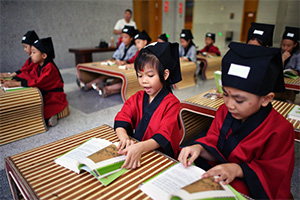

网站首页
马克思简介
新媒体简介
传统文化
新时代青年
做法
新媒体面临什么挑战和问题？
如何确保新媒体上的信息质量和真实性？
如何应对新媒体时代的信息过载问题？
如何平衡虚拟社交？？
如何保护青年学生的个人隐私和数据安全?
如何帮助青年学生建立健康的上网和媒体消费习惯？
借助自媒体促进大学生思想文化教育
创作精品内容与故事化传播
自媒体平台提供了广泛的传播途径，但首要任务是创作高质量的传统文化内容，如文章、视频、音频、图片等。这些内容应当有深度、有趣，能够引起青年学生的兴趣。
将传统文化内容故事化，以生动有趣的故事、人物或案例来传达文化内涵。故事化的传播方式更容易引起学生的共鸣和情感共鸣。
多媒体形式与跨学科链接
利用多媒体形式，如视频、音频播客、虚拟实境等，来呈现传统文化内容。多媒体可以更生动地展示文化元素，吸引年轻人的兴趣。
将传统文化与现代科技、社会问题等联系起来，展示文化在不同领域的应用和价值。这有助于青年学生理解文化的当代意义。
定制化内容与文化体验活动
根据不同年龄段和兴趣爱好的学生，提供定制化的内容。例如，可以有针对中小学生、大学生、职业青年等不同群体的内容。
不仅限于线上传播，还可以组织线下文化体验活动，如传统音乐演出、书法展览、博物馆参观等，让学生亲身感受传统文化的魅力。
文化导师和导向与培养审美情感
聘请有传统文化背景的导师或专家，为学生提供指导和解释，引导他们更深入地理解传统文化。
传统文化强调审美和情感体验，鼓励学生欣赏、感受和传达文化情感。通过自媒体传播，可以激发学生的审美情感。
青年学生
/Young students
青年学习礼仪文化
用年轻的方式，托举传统文化
当代中国青年是与新时代同向同行、共同前进的一代，生逢盛世，肩负重任。”2021年4月19日，习近平总书记在清华大学考察时对广大青年寄语。这盛世，来自人民也来自时代；这重任，来自使命更来自传承。
传承是发展的根与茎，发展是传承的花和果，唯有薪火相传，才能永保中华文化火种生生不息。 在科技发展高潮迭起的多元社会生态中，新的技术和工具开启了更加广阔的互联网空间，新一代年轻人的生活正在被更加多样、海量、快速化的信息所占据。人们静下心来做一件事的时间越来越少，留给传统文化独自美丽的空间也逐渐被压缩。但是，与此同时，新时代也象征着新的可能，从新媒体端的短视频、快直播到电商平台上的产销对接新模式，新时代为传统文化走进大众生活提供了新的机遇与选择，只等待一批怀揣梦想，传统技艺与创新思维兼备的新青年，以拼搏与智慧成就传统文化的新活力。
思想文化
/Ideology and culture

学习中华传统文化
新媒体视阈下促进高校大学生思想文化建设的跨界网站设计研究
地址：沈阳工程学院
制作团队：孙连有 李春霖